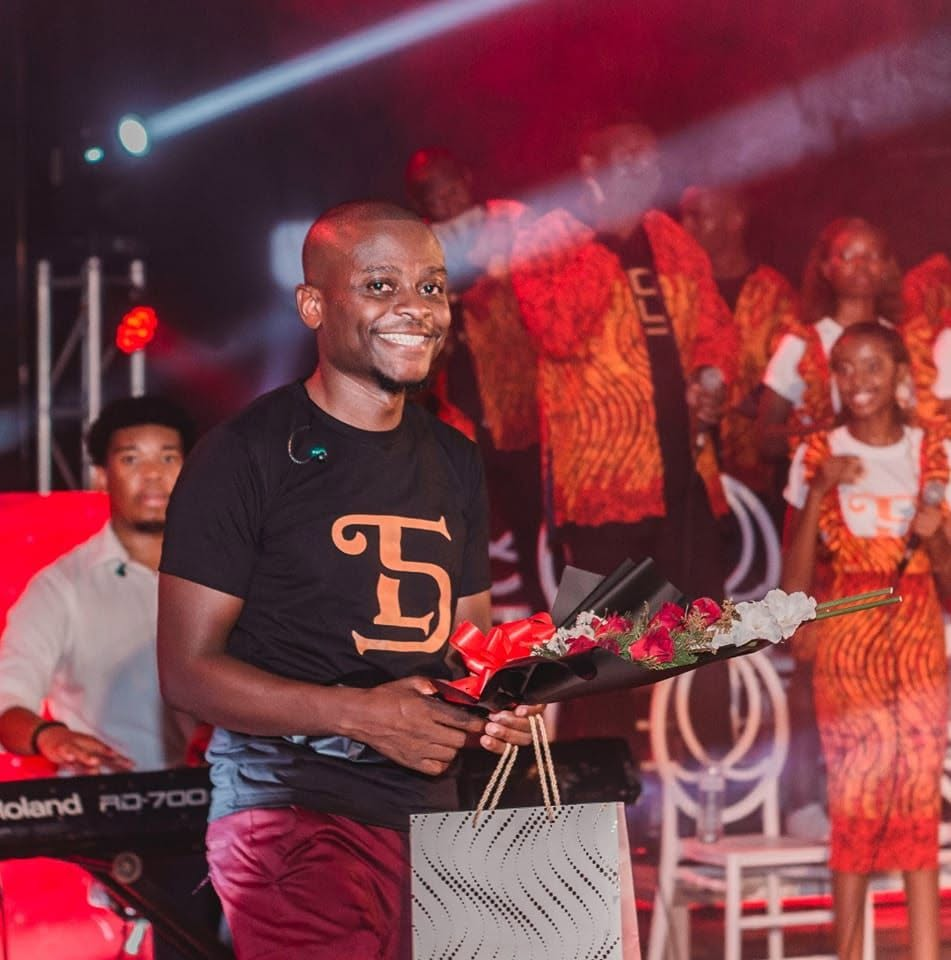
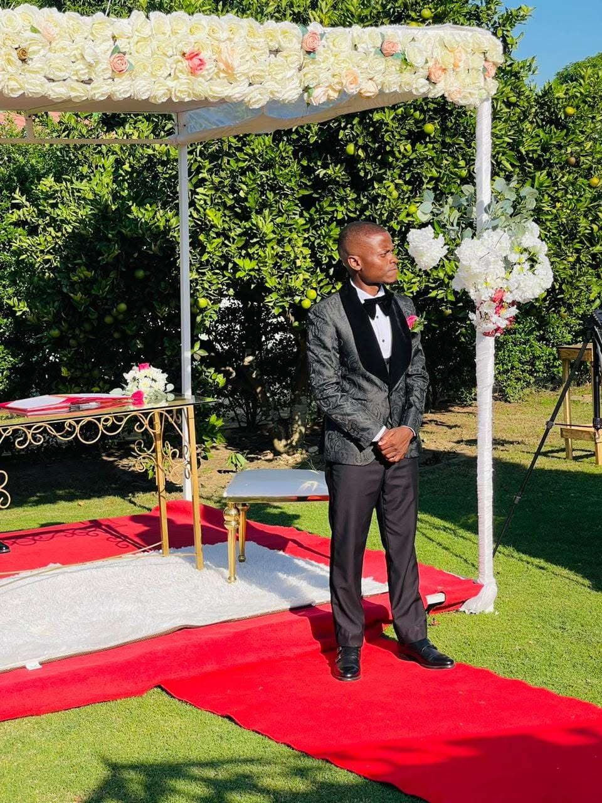

Tomás Mathe
Desenvolvedor de sistemas em Maputo
Desenvolvo sistemas que resolvem problemas reais de instituições moçambicanas, sobretudo em saúde e educação, combinando engenharia de software e machine learning.
Disponível para colaborações e consultoria
Trabalho
-
Sangue Solidário Doações de sangue com um modelo preditivo Fim de curso


Sistema de gestão de doações de sangue. Inclui um componente preditivo que estuda como converter dadores de reposição familiar em dadores voluntários regulares, tema de investigação ligado ao SENASA.
-
Java School Tutor de programação que ensina com perguntas Educação


Tutor de Java com método socrático: guia o aluno com perguntas em vez de entregar a resposta. O backend em Spring Boot funciona como fronteira de confiança e o código dos alunos é executado com Judge0.
-
StageUP Portal de gestão de estágios Independente


Portal de gestão de estágios, desenvolvido de forma independente e apresentado em contexto científico nas Jornadas Científicas.
-
Materiais de computação Unidade de Scratch e livros bilingues de história Colégio Dzovo


Unidade completa de programação em Scratch para a 4.ª a 6.ª classe, com manuais do professor, livros do aluno, avaliações e catálogo de projectos, ligada à feira de ciências de Outubro. Também criei uma colecção bilingue, em português e inglês, de livros de história de Moçambique para a 4.ª e 5.ª classes.
Percurso
- Estagiário Serviço Nacional de Sangue (SENASA)
- Professor de computação Colégio Dzovo, Cambridge Primary da 4.ª à 6.ª classe
- Desenvolvedor e consultor Independente, Maputo
- Licenciatura em Informática, finalista Universidade Pedagógica de Maputo, Engenharia de Desenvolvimento de Sistemas
- Google IT Support Certificação
Sobre
Sou finalista da Licenciatura em Informática na Universidade Pedagógica de Maputo e faço estágio no SENASA. O que mais me interessa é a IA e a engenharia de software aplicadas a saúde e educação em Moçambique.
Dar aulas de computação no Colégio Dzovo ensinou-me a explicar ideias técnicas de forma clara, e isso reflecte-se no modo como documento e desenho os meus projectos.


Ferramentas
- Backend e dados
- Java, Spring Boot, Python, PostgreSQL, pgvector, Docker
- Mobile
- Flutter
- Práticas
- Arquitectura hexagonal, testes automatizados, segurança com JWT, pagamentos locais com M-Pesa e e-Mola
Contacto
Disponível para colaborações, consultoria e oportunidades.
- GitHubtmbandze